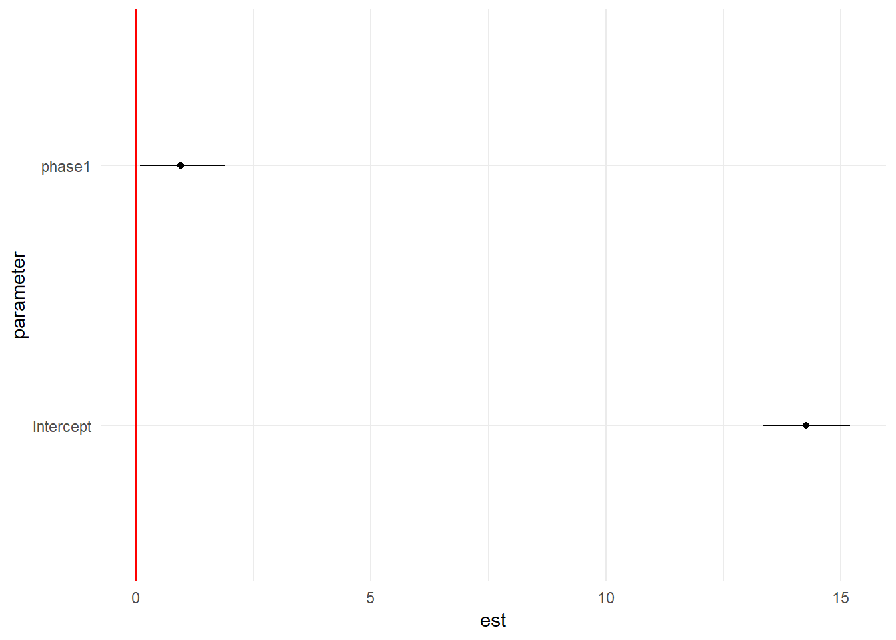

Chapter 9 Understanding and reporting the outputs
Point estimates
fixef(fixed_random)## (Intercept) phase1
## 14.2695219 0.9433342ranef(fixed_random)## $st_fip
## (Intercept) phase1
## 1 -1.78282438 4.597615e-09
## 2 1.15330874 4.377183e-10
## 4 0.12852444 1.930166e-10
## 5 -2.35878914 -1.237115e-09
## 6 0.23091628 4.199415e-10
## 8 2.66045865 -3.606000e-10
## 9 -1.33099385 -2.003182e-09
## 10 0.49232783 2.746547e-10
## 12 0.10160073 -4.770269e-10
## 13 0.05943937 4.113800e-12
## 15 -0.17678200 -2.654893e-10
## 16 0.28163119 1.562015e-10
## 17 2.17846498 -1.022814e-08
## 18 1.65088717 2.479285e-09
## 19 -0.69394682 3.258159e-09
## 20 -0.63451950 -5.529394e-10
## 21 1.87521347 -1.524100e-09
## 22 -1.50389226 1.641151e-10
## 23 1.78044856 -5.773276e-09
## 24 0.17909278 6.855145e-11
## 25 1.39501625 1.648564e-09
## 26 -1.78177645 -4.237651e-10
## 27 -0.08529162 9.307610e-12
## 28 -1.97456015 6.096326e-09
## 29 -0.94328552 -1.712393e-09
## 30 0.20095069 -8.624070e-11
## 31 -0.13355239 -7.450480e-11
## 32 2.70958201 4.069221e-09
## 33 1.27133656 1.913396e-09
## 34 -0.89252671 -2.122723e-10
## 35 -0.35287129 -5.310809e-10
## 36 -0.59671918 -1.646509e-09
## 37 -2.18153661 -3.269144e-09
## 38 1.09443772 2.602933e-10
## 39 0.72371535 1.316140e-09
## 40 0.37463919 -1.758973e-09
## 41 1.67672441 1.167555e-09
## 42 -1.01339149 -5.282123e-10
## 44 0.84611504 5.891763e-10
## 45 2.29931998 2.003697e-09
## 46 0.07315518 -1.309536e-10
## 47 -3.15737613 -2.198579e-09
## 48 -2.67912474 3.017555e-09
## 49 -0.57052531 -1.216445e-09
## 50 -0.39149904 -3.280883e-10
## 51 -0.60100189 1.559923e-09
## 53 0.41503195 -4.663502e-11
## 54 -1.20583697 5.980493e-10
## 55 1.19028491 2.830890e-10
##
## with conditional variances for "st_fip"We can also get confidence interals for the fixed effects using confint()
confint(fixed_random)## Computing profile confidence intervals ...## 2.5 % 97.5 %
## .sig01 1.0590439 3.162650
## .sig02 0.0000000 1.802257
## .sigma 8.2414661 9.095810
## (Intercept) 13.3612218 15.205404
## phase1 0.0835454 1.893044Using the broom.mixed package, you can use the tidy() function to extract model results, though this isn’t as tidy as most models are:
library(broom)
tidy(fixed_random, conf.int = TRUE)## Warning in bind_rows_(x, .id): binding factor and character vector,
## coercing into character vector## Warning in bind_rows_(x, .id): binding character and factor vector,
## coercing into character vector## # A tibble: 5 x 7
## term estimate std.error statistic conf.low conf.high group
## <chr> <dbl> <dbl> <dbl> <dbl> <dbl> <chr>
## 1 (Intercept) 14.3 0.467 30.5 13.4 15.2 fixed
## 2 phase1 0.943 0.442 2.13 0.0761 1.81 fixed
## 3 sd_(Intercept).~ 2.16 NA NA NA NA st_fip
## 4 sd_phase1.st_fi~ 0.0000937 NA NA NA NA st_fi~
## 5 sd_Observation.~ 8.65 NA NA NA NA Resid~9.1 Communicating results
This is not very easy to extract lmer results (see link).
# Extract out the parameter estimates and confidence intervals and manipulate the data
dataPlot <- data.frame(cbind( fixef(fixed_random), confint(fixed_random)[ 4:5, ])) # getting the rows for confint## Computing profile confidence intervals ...rownames(dataPlot)[1] <- "Intercept"
colnames(dataPlot) <- c("est", "L95", "U95")
dataPlot$parameter <- rownames(dataPlot)
# Print the new dataframe
print(dataPlot)## est L95 U95 parameter
## Intercept 14.2695219 13.3612218 15.205404 Intercept
## phase1 0.9433342 0.0835454 1.893044 phase1# Plot the results using ggplot2
ggplot(dataPlot, aes(x = parameter, y = est, ymin = L95, ymax = U95)) +
geom_hline( yintercept = 0, color = 'red' ) +
geom_linerange() +
geom_point() +
coord_flip() +
theme_minimal()
It is important that in many instances, rescaling might have to occur to make the model numerically viable (for instance, changing the year in our study to be 0 instead of the actual year).